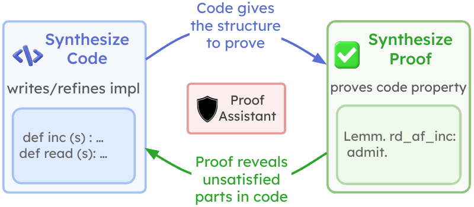
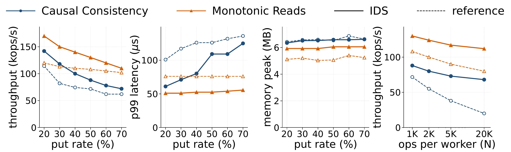
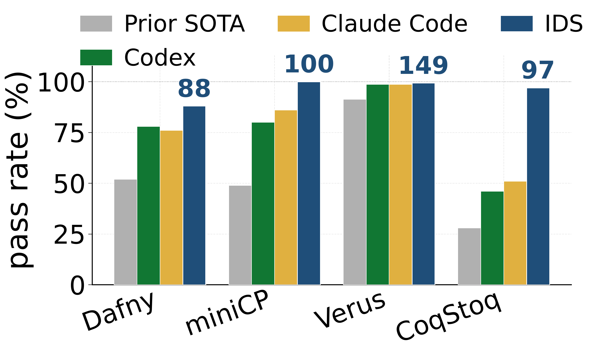

Inductive Deductive Synthesis
Enabling AI to Generate Formally Verified Systems
NeurIPS 2026 · arXiv:2605.23109
Shubham Agarwal1 ·
Alexander Krentsel1 ·
Shu Liu1 ·
Mert Cemri1 ·
Audrey Cheng1 ·
Rui Meng2 ·
Tomas Pfister2 ·
Chun-Liang Li2 ·
Sylvia Ratnasamy1 ·
Aditya Parameswaran1 ·
Matei Zaharia1 ·
Ion Stoica1 ·
Mohsen Lesani3
1UC Berkeley ·
2Google ·
3UC Santa Cruz
Formal Verification
Rocq / Coq
LLM Agents
Distributed Systems
Code + Proof
The Problem
AI writes code well — but can't guarantee it
What agents do well
Generate code for most tasks
Run tests & auto-refine output
Cover the cases they happen to try
Where they fall short
Correctness guarantees over every behavior
Rare bugs testing can't reach
Surface catastrophically at scale
Distributed systems are the prime example: consistency between reads & writes
must hold under every interleaving of messages, failures, and concurrent updates —
a space no test suite can cover.
The Evidence
Just hand an agent a proof tool? No.
Formal verification works — but slowly
A verified system has three pieces: a specification, an implementation, and a machine-checked proof it matches the spec on every input.
But adoption stalled for 20 years: real systems take
months to years of expert effort.
(Chapar's KV-store proof: 9–12 months.)
SOTA coding agents, given a proof assistant
2 / 7
specs solved by Codex (GPT-5.4) and Claude Code (Opus 4.6)
The failure is structural: agents treat verification as a downstream check — write all the code, then try to prove it all at once.
Defer all correctness feedback to the end → the agent stalls.
The Key Insight
Synthesize code and proof — jointly & incrementally

Two benefits
- Each joint step is simpler to prove
- Partial proofs are checkable — a dead-end is ruled out before work is wasted
Like chain-of-thought — but every intermediate step is
formally encoded and verified.
A failed step also becomes a counterexample that improves the next design.
Background
The type-checker is a perfect oracle — even on partial work
(* Specification: a counter *)
Axiom read_init : read init = 0.
Axiom read_inc : forall s,
read (inc s) = S (read s).
(* Partial synthesis — still type-checks! *)
Definition t := list unit.
Definition inc (s:t) : t. Admitted. (* hole *)
Theorem read_inc : forall s, ...
Admitted. (* hole *)
(* Complete synthesis *)
Definition inc (s:t) := tt :: s.
Proof. intros s. simpl. reflexivity. Qed.
Accept iff correct
Rocq/Coq accepts a proof iff it satisfies its proposition. No false positives, no false negatives.
vs. weaker signals
Tests (only inputs tried), static analysis (over-approximate), LLM-as-judge (guesses).
Unproven goals become deferred holes (
Admitted) — and the file still checks.
Counter → distributed store: axioms become read-your-writes; one
nat becomes a per-client vector; tactics become an inductive simulation with dozens of lemmas.
The System
IDS as a multi-agent architecture

① DSA — Deductive
Recursively decomposes component + spec into sub-parts with placeholders; type-checker ② grades every step.
⑤ ISA — Inductive
Proposer (A): helper lemmas on tactical stalls. Reloader (B): a fresh design on dead-ends.
Coordinator
Runs parallel DSAs, ③ benchmarks candidates eagerly, ④ audits closed proofs for non-vacuity.
Q1 — Hard specifications
IDS solves 7/7; SOTA agents only 2/7
| Specification | Codex | Claude Code | IDS | IDS time / cost |
|---|---|---|---|---|
| Chapar Causal Consistency | 0/3 | 0/3 | 3/3 | 10 h · \$148 |
| Read-Your-Writes | 3/3 | 3/3 | 3/3 | 2 h · \$52 |
| Monotonic Reads | 0/3 | 0/3 | 3/3 | 7 h · \$102 |
| Monotonic Writes | 2/3 | 3/3 | 3/3 | 3 h · \$58 |
| RYW + MW | 0/3 | 1/3 | 3/3 | 5 h · \$93 |
| Suite Causal Consistency | 0/3 | 0/3 | 2/3 | 11 h · \$155 |
| Labeled Causal Consistency | 0/3 | 0/3 | 3/3 | 10 h · \$136 |
| Total | 2/7 | 2/7 | 7/7 | ~6.8 h · \$106 avg |
Chapar's causal-consistency proof closed in 10 h — roughly 200× faster than the cited 9–12 months of expert effort. No human intervention, no fine-tuning.
Q2 — Performance in the loop
Verified and fast: up to 3× throughput

IDS matches or beats every hand-written expert reference: 3× on Chapar's vector-clock store, 1.4× on CC & monotonic reads; on MW/RYW+MW the reference times out.
Why? The proof obligation drove the agent to bounded data representations; benchmark feedback then steers it to the fastest verifying candidate.
Q3 — What drives it + generality
Joint design & rich feedback matter

DSA alone sets new SOTA across 4 languages
Ablations (on VERINA, 189 tasks)
- Remove joint discovery: hard specs → 0/3
- Replace structured Coq diagnostic with accept/reject: −35% (most consequential)
- Drop perf feedback: 1.42× slower on average
- Drop audit: ships vacuous proofs (e.g.
put-guard = false)
As a general prover: 176/189 VERINA (prior 38), 65/77 AlgoVeri (prior 31), 62/62 CloverBench. +10% to +51% over the same model without the IDS architecture.
Inductive Deductive Synthesis
Verified systems: from a person-year bottleneck to a compute problem
7/7
specs solved (SOTA: 2/7)
3×
throughput vs. references
200×
faster than expert effort
6
new Coq specs released
Joint, incremental code+proof under a partial-proof oracle, with failure & performance feedback in the same loop. Generalizes to any domain with a machine-checkable correctness oracle — kernels, compilers, crypto, hardware.
Open problem ahead: writing the specification is now the bottleneck.
github.com/skydiscover-ai/skydiscover
NeurIPS 2026
Thank you — Questions?